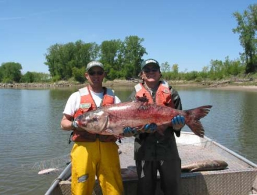

Targeted Delivery of Control Agents to Bigheaded Carps

Current control agents registered for use to control invasive or nuisance fish by the U.S. Environmental Protection Agency (EPA) are not selective, and when applied throughout the entire water column, expose native fishes to lethal levels of the control agent. Development of a microparticle delivery system filter-feeding bigheaded carps (bighead carp Hypophthalmichthys nobilis and silver carp H. molitrix) consume could reduce impacts to non-target native species by limiting their exposure to the control agents. Using technologies developed for aquaculture, pharmaceutical and agrochemical industries, USGS is developing and evaluating different microparticle formulations to identify those that may deliver biological or chemical control agents to control populations of bigheaded carps. Selecting the right formulation will require an in-depth understanding of the feeding habits, anatomical features that filter-feeding animals use to retain food particles (e.g. gill raker morphology), digestive physiology, and xenobiotic metabolism of native species and the bigheaded carps.
Studies assessing seasonal and spatial changes in digestive enzymes and gill raker morphology in bigheaded carps and native planktivorous fishes have been completed. Results indicate that bigheaded carps feed earlier in the year than native filter-feeding fishes and that certain digestive enzymes present in bigheaded carps are either not present in some native fishes or are much less active in the native species than in bigheaded carps. Results also indicate that the gill raker morphology of bigheaded carps is relatively constant with minimal seasonally or spatially relevant changes unlike that of the native gizzard shad (Dorosoma cepedianum) which had both seasonal and spatially correlated changes in gill raker morphology. These data are currently being used to inform the development of microparticle formulations to target control agent uptake by and release in bigheaded carps.
Studies are in progress to assess control agent availability/uptake from microparticles by bigheaded carps and native fishes. Work is also proceeding to determine the buoyancy of microparticles (i.e., do they sink, suspend or float when placed in water) and whether the control agent leaches from the microparticle. Studies are also in progress to assess the palatability of microparticle formulations to bigheaded carps (i.e., will bigheaded carps consume the microparticles). Only those microparticle formulations with minimal to no leaching, that are neutral to positively buoyant and are readily accepted by both bighead carp and silver carp will be used in further studies. Several microparticle formulations met these acceptance criteria and initial controlled, laboratory trials are in progress in the specially designed Invasive Species Complex at the USGS Upper Midwest Environmental Sciences Center, La Crosse, WI. In these trials, bigheaded carps and native fish are being offered microparticle formulations containing an EPA-registered piscicide. As the trials proceed, microparticle formulations will be modified as needed to enhance acceptance of the control agent-laden microparticles by bigheaded carps and minimize their uptake by native fish.
Development of these control agent-laden microparticles is a complex process that will include assessments of the risk of non-target animal exposure (e.g., native fishes and aquatic invertebrates, terrestrial animals that might consume fish that have consumed the microparticles, etc.,), degradation characteristics of the microparticles (i.e., how long will the microparticle and control agent persist), and other data needed to obtain registration of these control agent and microparticle formulations. Using an EPA-registered control agent for microparticle formulations is a benefit because data already exist for the control agent registration –data development will focus on how incorporating the control agent within the microparticle changes risks associated with exposure to that control agent.
Developing a control agent-laden microparticle could provide natural resource managers with the potential to target control efforts of bigheaded carps within selected habitats while minimizing the impacts to native species. Applied in conjunction with the feeding stimulants being developed by USGS scientists, managers could target delivery of control agent-laden microparticle within locations where bigheaded carp congregate to feed, minimizing the area where the microparticles are applied and limiting potential effects on native species. Applied within an integrated pest management framework, the development of these control agent-laden microparticles could substantially enhance the tools available to managers to control or limit populations of bigheaded carps. Although initial formulations focus on incorporating lethal chemical control agents, future formulations could incorporate biological or chemical agents which may have lethal to non-lethal effects.
- The size of the pores in silver carp gill rakers varied with fish size but not spatially or temporally whereas gill raker spacing in gizzard shad suggested phenotypic plasticity as the spacing varied seasonally and spatially.
- Bigheaded carps offered a range of sizes of microparticles containing a non-toxic dye readily consumed the microparticles and appeared to prefer microparticles ranging in size from 50 to 100 µm.
- Targeting a microparticle size range of 50 to 100 µm limits the number of non-target fish species that retain this particle size as food but there is overlap with some common species (e.g. gizzard shad).
- Bigheaded carps continue to feed at water temperatures below those at which native filter-feeding fish feed.
- Bigheaded carps have similar feed capacities when held at 12 or 24°C, but have the greatest capacity at 18°C
- The gastric evacuation rate of bigheaded carps is temperature dependent and slower at 12°C than at 24°C.
- Trypsin and phosphatases (digestive enzymes) are present in greater quantities and are more active in bigheaded carps than in native filter-feeding fishes.
Walleser, L.R., M.B. Sandheinrich, D.R. Howard, M.P. Gaikowski, and J.J. Amberg. In press. Spatial and temporal variation of the gill rakers of Gizzard Shad and Silver Carp in three Midwestern rivers. North American Journal of Fisheries Management.
Amberg, J.J., T.M. Schreier, and M.P. Gaikowski. 2012. Molecular responses differ between sensitive silver carp and tolerant bighead carp and bigmouth buffalo exposed to rotenone. Fish Physiology and Biochemistry doi: 10.1007/s10695-012-9625-1
Jensen, N.R., J.J. Amberg, J.A. Luoma, L.R., Walleser and M.P. Gaikowski. 2012. Assessing consumption of bioactive micro-particles by filter-feeding Asian carp. Journal of Aquaculture Research and Development 3:126 doi:10.4172/2155-9546.1000126
Jon Amberg, jamberg@usgs.gov
Upper Midwest Environmental Sciences Center, USGS
608-783-6451
Mark Gaikowski, mgaikowski@usgs.gov
Upper Midwest Environmental Sciences Center, USGS
608-783-6451